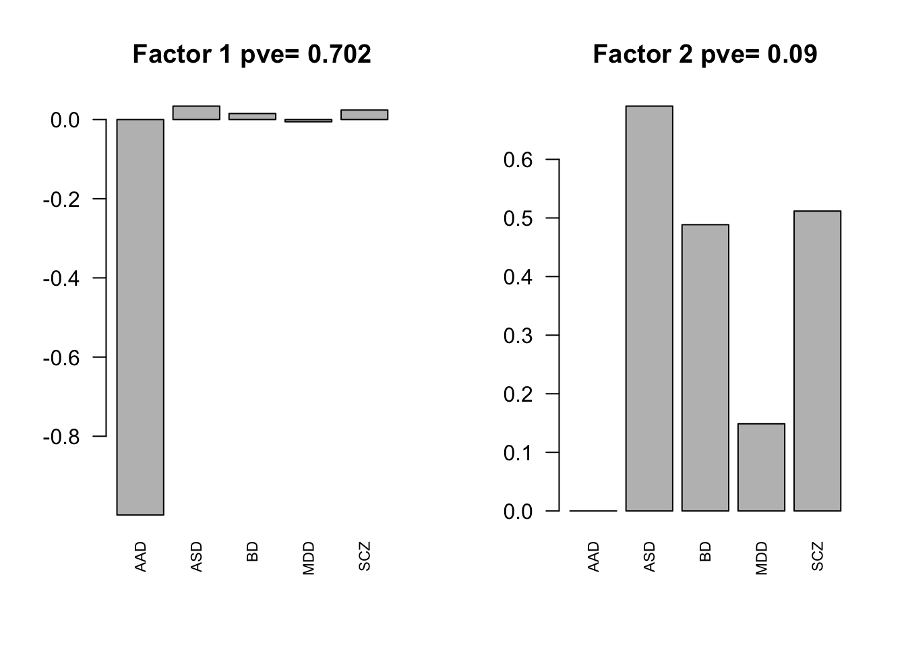

Last updated: 2018-05-12
workflowr checks: (Click a bullet for more information) ✔ R Markdown file: up-to-date
Great! Since the R Markdown file has been committed to the Git repository, you know the exact version of the code that produced these results.
✔ Environment: empty
Great job! The global environment was empty. Objects defined in the global environment can affect the analysis in your R Markdown file in unknown ways. For reproduciblity it’s best to always run the code in an empty environment.
✔ Seed:
set.seed(20180510)
The command set.seed(20180510) was run prior to running the code in the R Markdown file. Setting a seed ensures that any results that rely on randomness, e.g. subsampling or permutations, are reproducible.
✔ Session information: recorded
Great job! Recording the operating system, R version, and package versions is critical for reproducibility.
✔ Repository version: 6794bb7
wflow_publish or wflow_git_commit). workflowr only checks the R Markdown file, but you know if there are other scripts or data files that it depends on. Below is the status of the Git repository when the results were generated:
Ignored files:
Ignored: .Rhistory
Ignored: .Rproj.user/
Untracked files:
Untracked: .DS_Store
Untracked: code/ComplieData.R
Untracked: code/Microarray_All_GLM_IBD.R
Untracked: code/Microarray_Sep_GLM.R
Untracked: data/.DS_Store
Untracked: data/raw_data/
Untracked: data/results/.DS_Store
Untracked: data/results/Microarray_AAD_metaanalysis.rds
Untracked: data/results/Microarray_ASD_metaanalysis.rds
Untracked: data/results/Microarray_BD_metaanalysis.rds
Untracked: data/results/Microarray_MDD_metaanalysis.rds
Untracked: data/results/Microarray_SCZ_metaanalysis.rds
Untracked: data/results/Microarray_compiledGLM_IBD.rds
Untracked: data/results/control/
Untracked: data/results/tables/
Untracked: data/working_data/
Untracked: output/MashCB_EE_Cov_IBD.rds
Untracked: output/MashCB_model_EE_CompareSCZ.rds
Untracked: output/MashCB_model_EE_IBD.rds
Untracked: output/MashControl_EE_Cov.rds
Untracked: output/MashControl_model_EE.rds
Unstaged changes:
Modified: _workflowr.yml
Modified: analysis/MashCommonbaseline.Rmd
Modified: code/Microarray_All_GLM.R
Modified: data/results/Microarray_compiledGLM.rds
Modified: output/MashCB_EE_Cov.rds
Modified: output/MashCB_model_EE.rds
| File | Version | Author | Date | Message |
|---|---|---|---|---|
| Rmd | 6794bb7 | zouyuxin | 2018-05-12 | wflow_publish(c(“analysis/FlashC.Rmd”, “analysis/FlashD.Rmd”)) |
| html | 8739032 | zouyuxin | 2018-05-11 | Build site. |
| Rmd | 968a2e8 | zouyuxin | 2018-05-11 | wflow_publish(c(“analysis/FlashC.Rmd”, “analysis/FlashD.Rmd”, |
| html | 5e3788e | zouyuxin | 2018-05-10 | Build site. |
| Rmd | 409afa6 | zouyuxin | 2018-05-10 | wflow_publish(“analysis/FlashD.Rmd”) |
library(flashr); library(colorRamps); library(corrplot); library(mashr)corrplot 0.84 loadedLoading required package: ashrdata = readRDS('../data/results/Microarray_compiledGLM.rds')Set flash data object
mash.data = mash_set_data(Bhat = data$Chat, Shat = data$SE)
L = diag(ncol(data$Chat))
# the 4th col is none
L[,4] = -1
row.names(L) = colnames(data$Chat)
L = L[-4,]
mash.data.diff = mash_set_data_contrast(mash.data, L)
flash.data = flash_set_data(mash.data.diff$Bhat/mash.data.diff$Shat)
flash.model = flash(flash.data, greedy=TRUE, backfit = TRUE)fitting factor/loading 1fitting factor/loading 2fitting factor/loading 3factors = flash_get_ldf(flash.model)$f
row.names(factors) = row.names(L)
pve.order = order(flash_get_pve(flash.model), decreasing = TRUE)
par(mfrow=c(1,2))
for(i in pve.order){
barplot(factors[,i], main=paste0('Factor ',i, ' pve= ', round(flash_get_pve(flash.model)[i],3)), las=2, cex.names = 0.7)
}| Version | Author | Date |
|---|---|---|
| 5e3788e | zouyuxin | 2018-05-10 |
par(mfrow=c(1,1))Flash on loading:
loading = flash.model$EL[, 1:2]
flash.data.l = flash_set_data(loading)
flash.model.l = flash(flash.data.l, greedy = TRUE, backfit = TRUE)fitting factor/loading 1Z.center = apply(mash.data.diff$Bhat/mash.data.diff$Shat, 2, function(x) x - mean(x))
flash.data.c = flash_set_data(Z.center)
flash.model.c = flash(flash.data.c, greedy=TRUE, backfit = TRUE)fitting factor/loading 1fitting factor/loading 2fitting factor/loading 3factors = flash_get_ldf(flash.model.c)$f
row.names(factors) = row.names(L)
pve.order = order(flash_get_pve(flash.model.c), decreasing = TRUE)
par(mfrow=c(1,2))
for(i in pve.order){
barplot(factors[,i], main=paste0('Factor ',i, ' pve= ', round(flash_get_pve(flash.model.c)[i],3)), las=2, cex.names = 0.7)
}
| Version | Author | Date |
|---|---|---|
| 5e3788e | zouyuxin | 2018-05-10 |
par(mfrow=c(1,1))Flash on loading:
loading.c = flash.model.c$EL[, 1:2]
flash.data.lc = flash_set_data(loading.c)
flash.model.lc = flash(flash.data.lc, greedy = TRUE, backfit = TRUE)fitting factor/loading 1sessionInfo()R version 3.4.4 (2018-03-15)
Platform: x86_64-apple-darwin15.6.0 (64-bit)
Running under: macOS High Sierra 10.13.4
Matrix products: default
BLAS: /Library/Frameworks/R.framework/Versions/3.4/Resources/lib/libRblas.0.dylib
LAPACK: /Library/Frameworks/R.framework/Versions/3.4/Resources/lib/libRlapack.dylib
locale:
[1] en_US.UTF-8/en_US.UTF-8/en_US.UTF-8/C/en_US.UTF-8/en_US.UTF-8
attached base packages:
[1] stats graphics grDevices utils datasets methods base
other attached packages:
[1] mashr_0.2-8 ashr_2.2-7 corrplot_0.84 colorRamps_2.3
[5] flashr_0.5-6
loaded via a namespace (and not attached):
[1] Rcpp_0.12.16 pillar_1.2.2 compiler_3.4.4
[4] git2r_0.21.0 plyr_1.8.4 workflowr_1.0.1
[7] R.methodsS3_1.7.1 R.utils_2.6.0 iterators_1.0.9
[10] tools_3.4.4 digest_0.6.15 tibble_1.4.2
[13] evaluate_0.10.1 gtable_0.2.0 lattice_0.20-35
[16] rlang_0.2.0 Matrix_1.2-14 foreach_1.4.4
[19] yaml_2.1.19 parallel_3.4.4 mvtnorm_1.0-7
[22] ebnm_0.1-11 stringr_1.3.0 knitr_1.20
[25] rprojroot_1.3-2 grid_3.4.4 rmarkdown_1.9
[28] rmeta_3.0 ggplot2_2.2.1 magrittr_1.5
[31] whisker_0.3-2 backports_1.1.2 scales_0.5.0
[34] codetools_0.2-15 htmltools_0.3.6 MASS_7.3-50
[37] assertthat_0.2.0 softImpute_1.4 colorspace_1.3-2
[40] stringi_1.2.2 lazyeval_0.2.1 doParallel_1.0.11
[43] pscl_1.5.2 munsell_0.4.3 truncnorm_1.0-8
[46] SQUAREM_2017.10-1 R.oo_1.22.0 This reproducible R Markdown analysis was created with workflowr 1.0.1